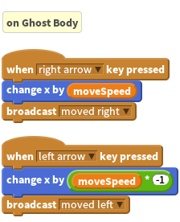
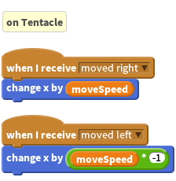
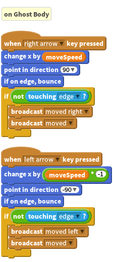
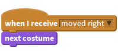

Activity Checklist
As your monster will be made up of lots of sprites you will need to make sure that all sprites move together at once. Rather than adding move commands to all your sprites you can simply attach your controls to your body sprite and use
broadcastto control any other sprite. When our Tentacle sprite (or any other sprite for that matter!) receives amoved rightbroadcast, we can move it to the right too.

Using
broadcastalso means if we want to change the way our movement commands work, we only have to change one set of scripts. Have a look at this example:
- Here we’re telling the body to face the direction it is moving (make sure your sprite orientation is set to “only face left-right”) and to stop and turn around if it collides with the edge of our screen. You will have also noticed that we have wrapped our broadcast in an
ifblock, we only want the other body parts to move if the body isn’t on the edge of the screen. If you decide to add any animation to the movement, make sure that any associated movements take just as long. i.e. if moving a leg to the left takes 1 second due to an animation, all other left movements must take 1 second too (use awaitblock to make sure they’re all in step). You can also animate your body sprite using
costumechanges, by triggering the change every time a movement broadcast is received.